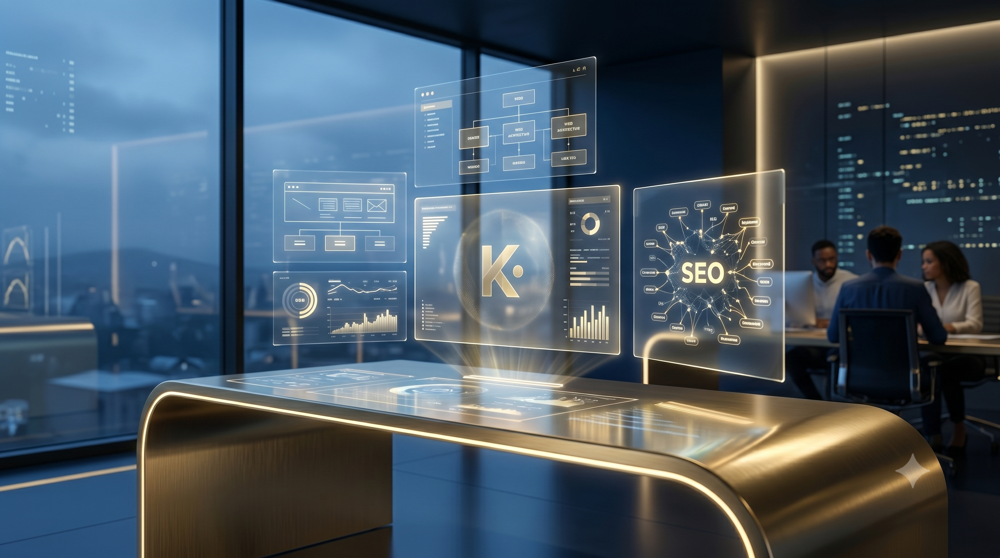

Misyonumuz
kamanubyo2026'nın misyonu; müşterilerinin dijital potansiyelini maksimuma çıkarmak için modern tasarımlar, kusursuz SEO stratejileri ve kalıcı web çözümleri üretmektir. Her projeyi kendi vizyon projemiz gibi sahipleniriz.
2026 yılında kurulan kamanubyo2026, dijital dönüşüm yolculuğunda markalara ve projelere rehberlik eden yenilikçi bir web tasarım ve SEO platformudur.

Hikâyemiz
kamanubyo2026, akademik bilgi birikimini dijital dünyanın pratik dinamikleriyle harmanlama fikrinden doğdu. Yönetim Bilişim Sistemleri (YBS) vizyonunu merkeze alan ekibimiz, "İyi tasarlanmış bir web sitesi sadece şık görünmemeli, aynı zamanda arama motorlarında da zirveye oynamalı" felsefesiyle yola çıktı.
Sıradan, hazır şablonlara sıkışmış web projeleri yerine; sıfırdan optimize edilmiş, temiz kod yapısına sahip, %100 SEO uyumlu ve ziyaretçi dostu arayüzler inşa ediyoruz. Dijital kimliğinizin, sizin veya markanızın en güçlü vitrini olduğuna inanıyoruz.
Bugün kamanubyo2026, yerel projelere kattığı değerin yanı sıra, sınırları aşan vizyonuyla modern dijital çözümler sunmaya ve portföyünü her geçen gün sağlamlaştırmaya devam etmektedir.
Yol Haritamız
kamanubyo2026 olarak adımlarımızı atarken pusula olarak kullandığımız iki temel ilkemiz.
kamanubyo2026'nın misyonu; müşterilerinin dijital potansiyelini maksimuma çıkarmak için modern tasarımlar, kusursuz SEO stratejileri ve kalıcı web çözümleri üretmektir. Her projeyi kendi vizyon projemiz gibi sahipleniriz.
Geleceğin standartlarını bugünden yakalamak. Sektörde "kaliteli kod" ve "organik büyüme" denildiğinde akla ilk gelen, stratejik vizyonu en yüksek butik dijital ajanslardan biri olmak.
Estetik ile performansın ayrılmaz bir bütün olduğuna inanıyoruz. Hem göze hitap eden (UI) hem de arama motoru botlarının (SEO) rahatça tarayabildiği yapılar kuruyoruz.
Temel Değerler
kamanubyo2026'nın attığı her dijital adımın arkasında yatan profesyonel değer sistemi.
Projelerimizin her aşamasında (tasarım, kodlama, indeksleme) açık bir iletişim kurarız. Neyi neden yaptığımızı gizlemez, veriyle konuşuruz.
Bizim için yavaş açılan bir site, bitmemiş bir projedir. Web Vitals metriklerini ciddiye alır, daima yüksek hız hedefleriz.
Siteyi yapıp teslim etmekle işimiz bitmez. Dijital dönüşümün sürekli bir yolculuk olduğunu bilir, markalarımızla beraber yürürüz.
Kod yapımızı her zaman en güncel HTML5, CSS3 ve erişilebilirlik (a11y) standartlarına %100 uyumlu şekilde geliştiririz.
Kilometre Taşları
Ocak 2026
Yönetim Bilişim Sistemleri bakış açısını web geliştirme ile birleştirerek profesyonel dijital çözümler üretme fikri hayata geçirildi.
Mart 2026
Kapsamlı SEO analizleri ve modern web mimarisi üzerine kurgulanmış ilk projelerimiz başarıyla yayına alındı ve Google dizinine eklendi.
Mayıs 2026
Sadece yerel değil, genel çapta markaların dijital dönüşümünü üstlenecek bilgi birikimi ve teknik altyapı standartları belirlendi.
Gelecek Vizyonu
Arama motorlarında üst sıraları domine eden, estetik algısı yüksek ve kullanıcı dostu projeler üretmeye ara vermeden devam ediyoruz.
Markanızın dijital yüzünü yenilemek, arama sonuçlarında otorite kurmak veya projelerimizi detaylandırmak için bize hemen ulaşın.
İletişime Geçin